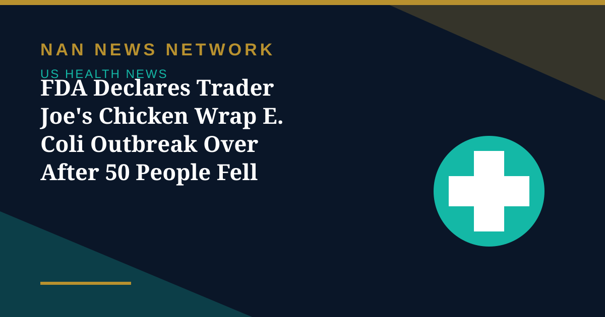

FDA Declares Trader Joe's Chicken Wrap E. Coli Outbreak Over After 50 People Fell Ill

The Food and Drug Administration has declared over the E. coli outbreak linked to multi-ingredient wraps with chicken, an outbreak that sickened 50 people during one week in August, according to an agency update on October 28.
Why the FDA says the case is closed
The implicated wraps were proactively removed from the market before the link to the outbreak was established, and the products people ate are past their shelf life and no longer available for purchase. The FDA said more detailed product information would not have provided consumers with an action they could take to prevent illness. Neither the FDA nor the USDA's Food Safety and Inspection Service named the grocery chain in their outbreak reports, though the USDA confirmed to USA Today that the wraps came from Trader Joe's, and the company has said it pulled its Tarragon Chicken Salad Wraps from shelves in nine states.
What remains unresolved
The agencies have not publicly revealed the source of the E. coli contamination, what ingredients were traced, or which locations were inspected. The FDA said its outbreak investigation remains active even as the outbreak itself is declared over, and Food Safety News reports a separate new outbreak is now under investigation, with no details yet released.
A reminder on food safety
E. coli O157:H7 can cause severe stomach cramps, bloody diarrhea and, in serious cases, kidney failure, with young children and older adults at highest risk. Consumers who still have any suspect wraps in a freezer should discard them, and anyone with symptoms after eating a prepared chicken wrap should seek medical advice.
Sources: Food Safety News, FDA outbreak update, October 28-29, 2026
More on US Health News
- FDA Recalls More Than 21,000 Bottles of Blood Pressure Drug Over Excess Active Ingredient
- FDA Recall: Miyoko's Plant-Based Butter Pulled in 10 States Over E. Coli, Yeast and Mold
- CDC: Drug-Resistant Germs Cause Nearly 9.7 Million US Infections a Year
- CDC Deputy Director Jennifer Shuford to Leave After Midterms, Report Says
- FDA Clears Cullinan's Velinotamig Trial for Autoimmune Blood Disorders
- Regeneron Extends US Ebola Supply Deal Worth About $270 Million Through 2031
- FDA Warns San Francisco Fermented Foods Maker Over Pathogen Risks and Labeling
- Salmonella Oyster Recall Expands: What to Know About the Little Wicomico Outbreak
- Graziers Raw Milk Cheese Recall: 13 Sick, 8 Hospitalized as FDA Issues Class I Warning
- CDC and FDA Performance Ratings Hit All-Time Lows in Gallup Poll